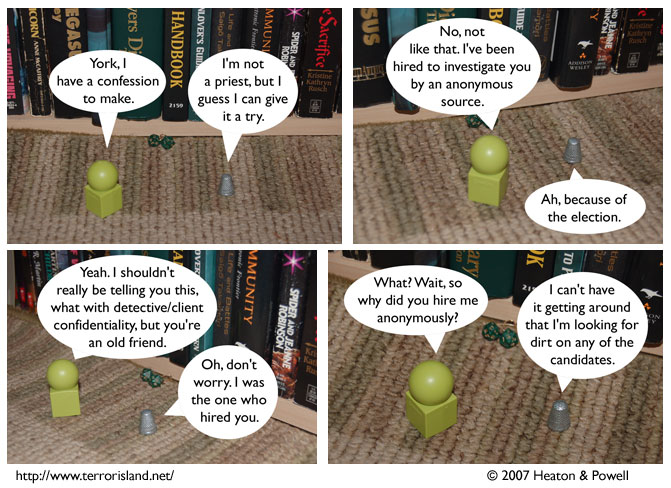

Strip #213
— Monday, October 22, 2007
Actually, York is a priest, but he has been keeping this secret under wraps for three centuries, and isn’t about to blow his cover now.
Notes, Thoughts, &c.
Ben’s Notes
I’m in DC right now, as you can tell by the fact that York’s gaming store is showing up in the strip. (I like to imagine that people watch the comic carefully to pick up on my movements in real life. Please indulge me in this notion.)
After I got here, I realized I’d forgotten to bring my tiny novelty dice, but fortunately, Claire happened to have some of her own. D20s, even.
Lewis’s Notes
The ‘c’ key on my keyboard is not working, and I am dealing with this by a combination of strategies: (1) See if I am able to reword what I want to type without the key that fails to work, and (2) copy and paste the letter ‘c’ from other text on the screen.
You had better believe I am getting this looked at in the very near future.